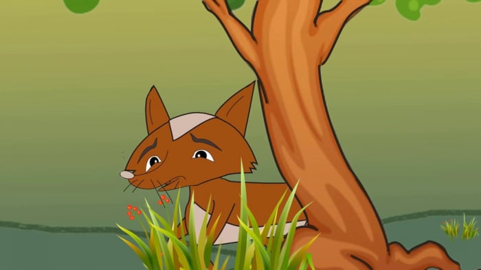
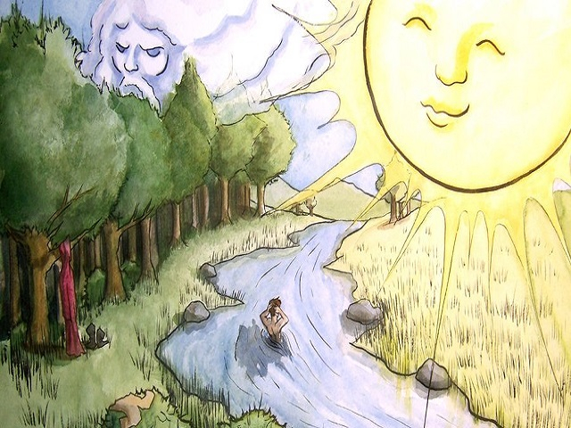

Một con Cáo bị bẫy, sau nhiều cố gắng giật mình thoát khỏi nó, nó rời xa. Tuy nhiên, nó phải đánh đổi cái đuôi đẹp đẽ của mình để thoát khỏi bẫy. Lâu dài, nó tránh mặt lũ Cáo khác vì sợ bị chế giễu. Nhưng sống một mình cũng không dễ dàng. Cuối cùng, nó nghĩ ra một giải pháp cho vấn đề này. Nó triệu tập lũ Cáo và thông báo về những vấn đề mà mỗi con Cáo phải đối mặt với cái đuôi của mình. Nó kể về những rủi ro mà lũ Cáo đã gặp vì đuôi. Một con bị chó săn vồ vì đuôi bị vướng vào bụi gai, con khác không thể chạy nhanh vì đuôi quá nặng. Ngoài ra, con người cũng săn Cáo để lấy đuôi làm kỷ niệm. Với những lẽ luận này, Cáo Cụt Đuôi khuyên lũ Cáo nên cắt đuôi để sống an toàn. Khi nó nói xong, một cụ Cáo đứng lên và yêu cầu nó quay mặt đi. Khi Cáo Cụt Đuôi quay mặt, lũ Cáo cười và la ó, thể hiện sự chế giễu. Cáo Cụt Đuôi hiểu rằng thuyết phục lũ Cáo làm như vậy là vô ích.

Có con quạ tha được xác một con chuột thối về ngồi trên cây rỉa mồi. Diều
từ trên cao ngó thấy liền hạ cánh xuống bảo:
- Này anh Quạ ơi, xác con chuột bị ngấm thuốc độc, đừng ăn mà chết đấy anh
ạ!
Quạ chẳng nghe mà lại còn la mắng:
- Anh muốn chia phần miếng mồi ngon của tôi đấy hử, chẳng đời nào!
Gió Bắc và Mặt Trời tranh cãi về ai mạnh mẽ hơn. Trong lúc ấy, có một
người du khách đi qua mặc chiếc áo khoác.
“Chúng ta hãy thử thách nhau” - Mặt Trời nói: “Ai có thể làm cho người đó
cởi bỏ chiếc áo sẽ thắng.”
“Đồng ý,” - Gió Bắc gầm lên, thổi cơn gió lạnh vào người du khách. Áo anh
ta như bay nhẹ nhàng vào phía trước. Anh ta giữ chặt chiếc áo và không
buông.
Lượt của Mặt Trời, tia nắng ban đầu êm dịu và ấm áp. Anh ta cởi bỏ mũ và
mở nút áo. Khi nắng trở nên nóng bức, anh ta quên cả việc giữ áo và cuối
cùng là lột sạch áo, chạy đến bóng cây.
